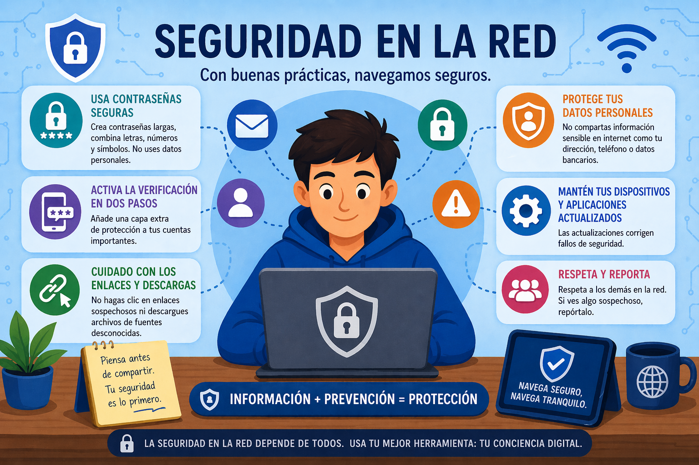

SEGURIDAD

Conviene conocer ciertas situaciones, identificarlas correctamente y no caer en la trampa.
ATAQUES: Identifica algunos de los que podrías ser víctima o que pueden llevarte a incumplir la ley:
• Virus, malware y otros softwares maliciosos. Se trata de software que puede provocar daños en el equipo, añadir publicidad no deseada, robar información o convertirlo en un equipo que se utilizará para realizar nuevos ataques o cometer delitos sin que el usuario lo sepa.
• Phishing: Es un caso concreto de suplantación de identidad. Los ciberdelinc
ACOSO Y ABUSO EN INTERNET: Para evitar el acoso y el abuso en Internet:
• No participes nunca en actividades que incluyan conductas de este tipo, ni siquiera como espectador. Ponlas en conocimiento de un adulto responsable.
• No difundas nunca material de otras personas, protegido por la LOPD, aunque tú no seas el autor. Es un delito.
• Si recibes contenido inadecuado, tuyo o de otra persona, ponlo en conocimiento de tus padres, tu tutor, un profesor de confianza u otro adulto responsable.
• No cedas nunca a ningún chantaje que puedas recibir.
• No envíes a nadie información ni contenido tuyo que no quieres que se conozca. Desde el momento en que lo envías o lo publicas pierdes el control de ese contenido, y eliminarlo de Internet es muy difícil.
EFECTOS DE LAS REDES SOCIALES SOBRE LA SALUD: Estudios científicos han encontrado una relación directa entre el aumento de la depresión y el uso de redes sociales. La imagen perfecta que muchas veces se proyecta en Internet genera estándares imposibles de conseguir. Conseguir likes se puede convertir en una obsesión que genera ansiedad cuando no llegan.